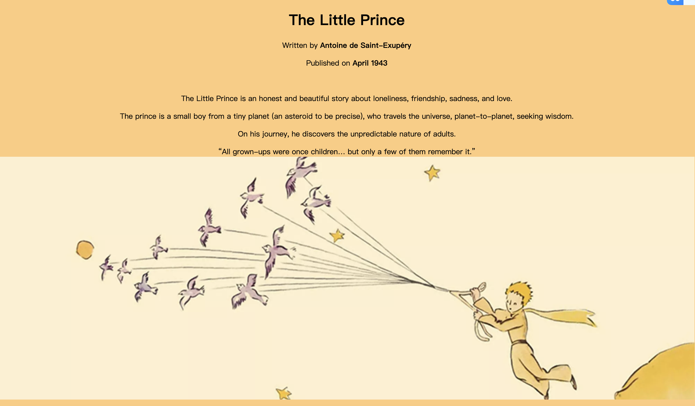
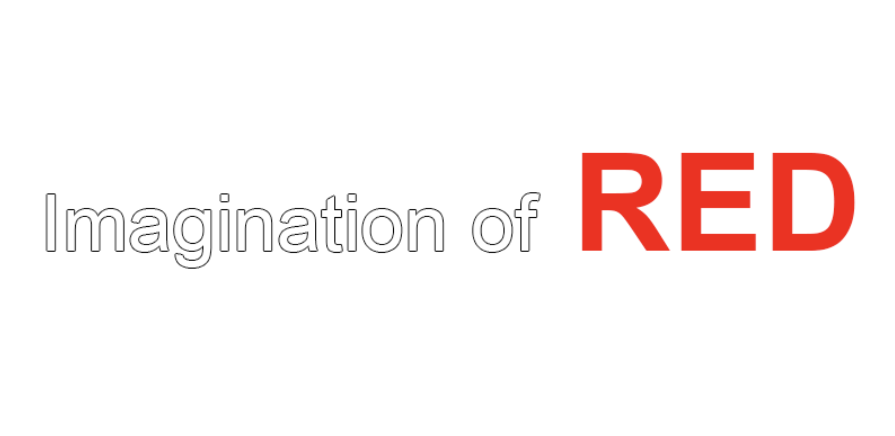
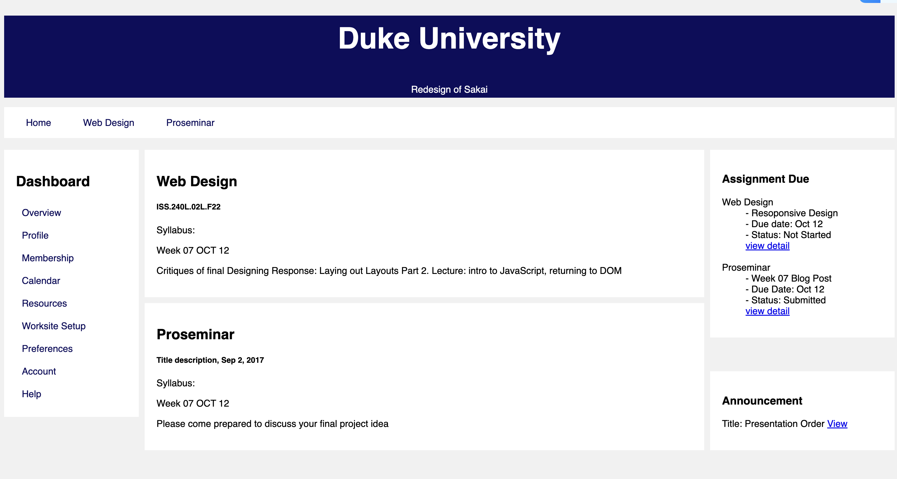
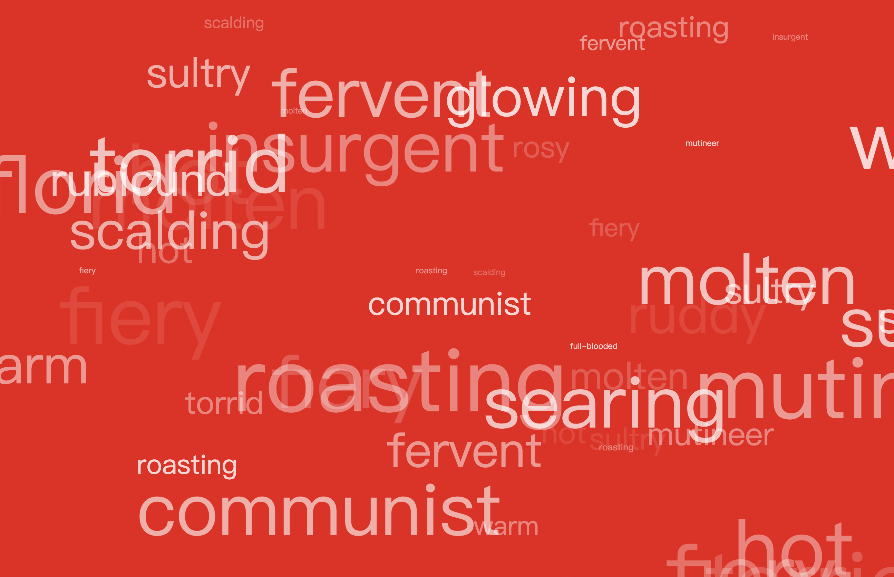
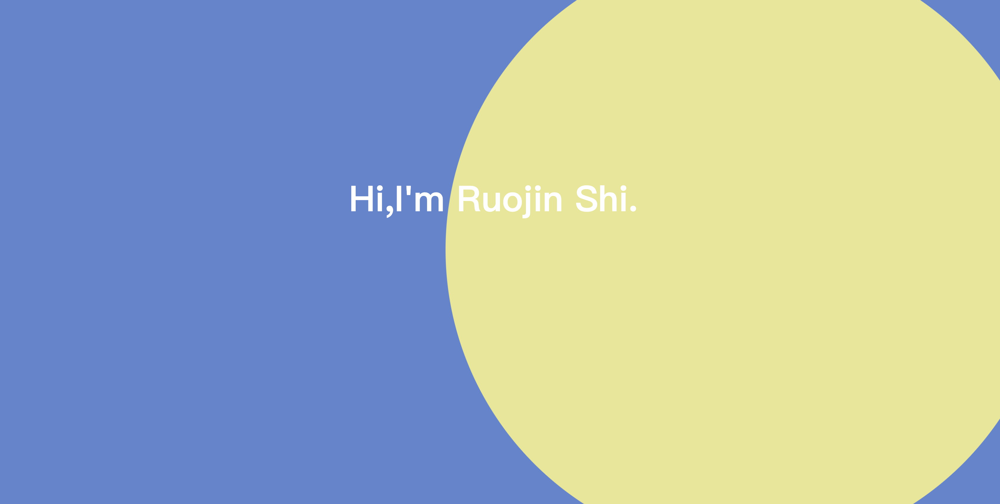
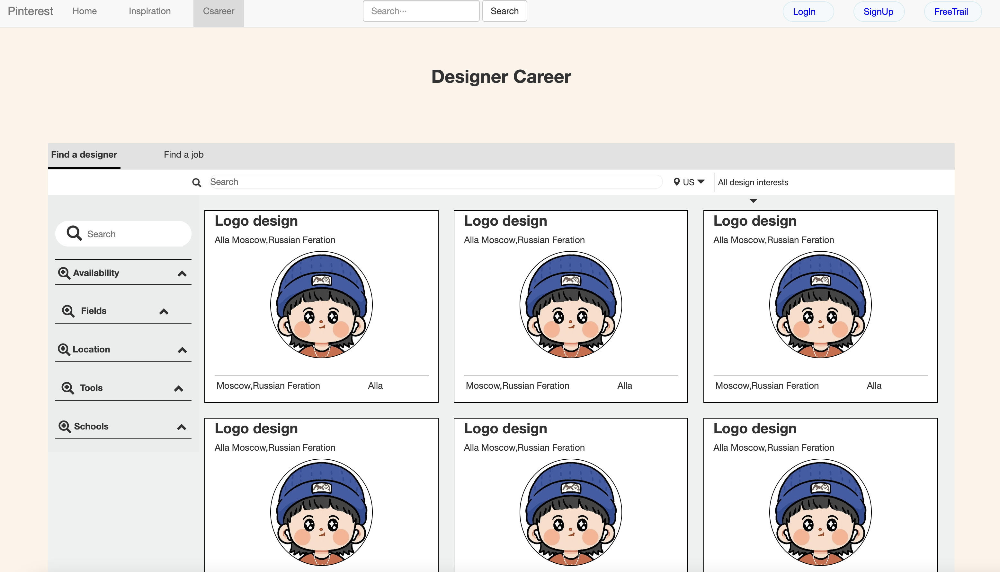

Hi, I'm Ruojin Shi.
Project1:
The Little Price Notes
My First Webpage using HTML:
A vaild HTML5 webpage for notes and images taken from a book "The Little Prince"

Project2:
Imagination of Red
Early Internet Art: Accessible Surfing:
In this second project, I created a website inspired by Early Internet Art.

Project3:
Sakai Redesign
Laying out Layouts:
In this third project, I redesigned Duke Sakai main page to demostrate the difference between mobile users and website users.

Project4:
Displaying Red
JS Simple Task:
In this fourth project, I used Javascript to display the collection of words related to the color red in an active way.

Project5:
My Personal Website
Personal Website: To Brand or Not to Brand?
In this project, I designed my personal protfolio website using html, css and Javascript.

Project6:
Redimagine Pinterest
Final Project: Re-Imagining the Internet
In this project, I re-imagined one of my favorite website for inspration and added a career page funciton to the Pinterest website,
